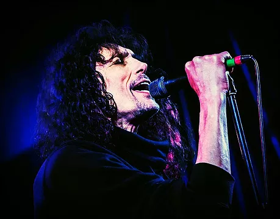
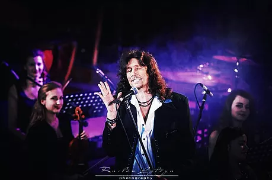
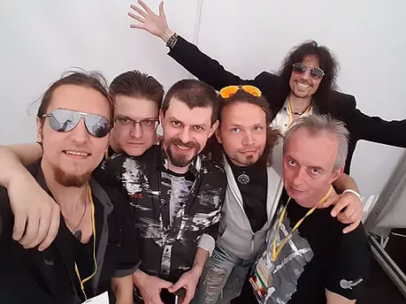
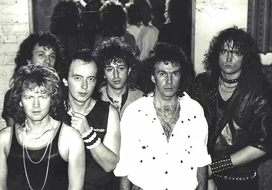
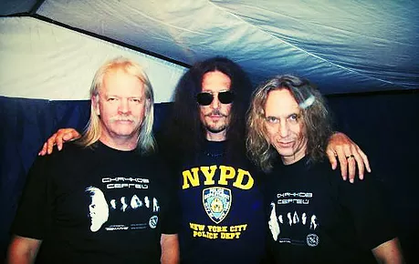
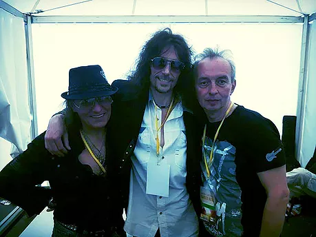
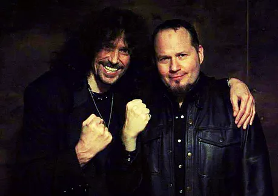
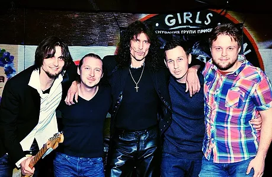
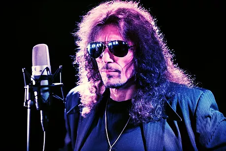
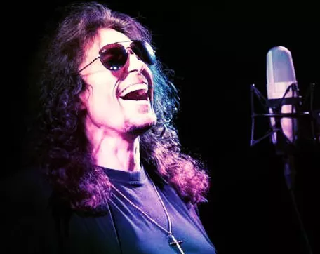

Виступ з Симфонічним оркестром під керування
Миколи Орача. Львів.
З Романом Ліщинським... Beatles - триб'ют. 2015.
На благодійному концерті у Львові, 2016
Виступ із Royal Orchestra. Львів, Філармонія,2015
Група "GALAXY" на фестивалі "Garden Music" 2015
Група "Галактика" - перший склад, 1987 рік
Група "GALAXY" - американський склад
Поміж зйомками...
З Сергієм Cкачковим (група"Землянє") та Олегом Ховріним... 2012
З Сергієм Чентурия та Вячеславом Василенко, 2015
З Енвером Ізмайловим, 2013
З Тімом (Ріппер) Оуенс - вокалістом групи "Judas Priest" - на спільному виступі, 2014
З групою "SINCHUK BAND"
Запис на студії...
Каріна Плай
" Абсолютно блестяще. " - Bob Harris BBC Radio 2
« "Galaxy" Синчука - отличная группа, я рад что ребята снова собрались, обзательно приеду к вам на "Galaxy-ROCK"». - Phil Collins
Слава Синчук -Википедиярок-музыкант, певец и композитор, гитарист, лидер группы «Галактика», участник групп «Фавориты” и «Красные маки». Родился 6 января 1964 во Львове в украинско-шотланской семье. Дед Славы общался с внуком на английском, а отец-украинец обучал Славу музыке с самого раннего детства. Еще будучи школьником Слава окончил пять классов музыкальной школы по классу баяна, а также занимался борьбой,самбо,каратэ и подавал большие надежды,о чем часто говорили в профессиональных спортивных кругах... Первую свою группу Слава собрал ещё учась в старших классах, назвав её «Teen Gentleman”. Ребята играли каверы на популярные в то время песни «Deep Purple”, “Nazareth”,”Black Sabbath” и т.д. Славу даже прозвали "Nazareth", что надолго стало его вторым именем. Так как в то время петь песни вышеперечисленных групп считалось чуть ли не преступлением, группу довольно часто преследовали неприятные разговоры с дирекцией школы и даже с правоохранительными органами, тем более, что каждое выступление группы заканчивалось поломанными стульями в спортзалах, разбитыми окнами и т.д. Именно по этой причине Слава начал писать свои первые собственные песни... По окончании школы тренера Славы прочили ему блестящее будущее в спорте и всячески пытались склонить его к поступление в ИНФИЗ, но у Славы были свои планы. Он постоянно слушал рок музыку, платил на то время немалые деньги за записи с пластинок и сам учился игре на гитаре. Однажды сразу после окончания школы к Славе наведались длинноволосые симпатичные ребята, очень похожие на "фирменных рокеров". Пригласили на репетицию и спросили не хотел бы он петь с ними. Слава, не веря в то, что в СССР могут быть музыканты класса "Deep Purple" или "Nazareth" отказался. Но ребята оказались настойчивыми и в один из дней просто приехали на машине и повезли Славу на свою репетицию. Конечно, до выше указанных групп они слегка не дотягивали, но ,на взгляд Славы, это было где-то близко. Так Слава Синчук попал в рок-команду "Фавориты". Начались гастроли, концерты и совсем новая жизнь. Исполняла группа свои песни, по стилю здорово напоминавшие "Deep Purple", поэтому с трудом сдавала программу "орденоносным" и не смыслящим в роке худсоветам, прибегая ко всякого рода хитростям и называя авторами своих песен известных советских композиторов и поэтов, только поэтому получая разрешение на гастрольную деятельность. Позднее Славу пригласили в группу "Круиз", но судьба распорядилась так, что направившись в Москву для работы в "Круизе", Слава попал в группу "Красные Маки". Там Слава познакомился с гитаристом и композитором Севой Татаренко, а спустя некоторое время вместе с ним ушел из"Маков". Так родилась группа "Галактика". GALAXY "Галактика" стала одной из самых популярных и известных групп СССР, собирая с неизменными аншлагами стадионы и Дворцы Спорта по всему Союзу. Ребята работали на износ, иногда по 4 концерта в день. Было записано и издано четыре альбома на всесоюзной "Мелодии", их постиг фантастический успех и продажи по всей стране. Это было время нереальной популярности, востребованности, но также полного физического и морального истощения. Первый состав распадается............................ Галактика остаётся за Синчуком. Немного отдохнув и придя в себя, Слава упорно ищет музыкантов, тех лучших, которые могли бы его устроить. Так родилась новая "американская" Галактика – "GALAXY". Далее репетиции нового материала и запись первого в СССР альбома (на той же Мелодии) на английском языке и успех этого альбома – несколько переизданий тиражей. Не удивительно, что группу под своё "крыло" берёт продюсер Ованес Мелик-Пашаев , подписывает с группой контракт, и GALAXY уезжает в США. История в двух словах произошла так: американцы, приехавшие покупать лучшую группу у Ованеса, проходили мимо зала где репетировала Галактика. Услышав музыкантов они просто сказали :"Мы покупаем ЭТО!". Вот так продюсер Ованес Мелик-Пашаев повез Славу и GALAXY в США, где пять лет группа давала концерты и выступала на различных фестивалях , а также в легендарных клубах. В Америке "Галактика" записала еще один англоязычный альбом, автор всех песен которого – Вячеслав Синчук (тексты, музыка, аранжировка). В 1996 году по результатам опроса журнала "New Metal" Вячеслав Синчук занял 8 место в первой десятке лучших рок-певцов мира. Это была честная и настоящая победа. Группа поразила скептически настроенных американцев, более того, они называли "GALAXY" музыкой, опережающей время. Ярко выраженный стиль и профессионализм высочайшего класса не могли не заметить и другие продюсеры - серьёзные игроки американского шоу-бизнесового рынка. "Bad Company" , "Motley crue","Steppen Wolf", Donna Sammer - всем нужен STIV SINCHUK , как называли американцы Славу, но не группа Galaxy, которая на тот момент становилась неже лательным конкурентом местным рок-командам. Развития группе не давали, а Славу с его блестящими данными рвали по частям и перетягивали в другие проекты. Перед молодым артистом встал крайне сложный выбор. И Слава поступил неожиданно для всех: т.к. все ребята американской Галактики решили остаться в Америке , Слава в одиночку возвращается в Украину чтобы поднять рок-музыку у себя на Родине и снова создать свою легендарную GALAXY, свою украинскую рок-группу ........................................ В 1996 году вдохновленный этой идеей Синчук возвращается на Украину и попадает в совершенно другое музыкальное измерение, где только только начинает развиваться молодая украинская эстрада, замешанная на фольк- и поп- основе. Мелодичный хард- энд хэви- считался в то время и продолжает считаться доныне НЕФОРМАТОМ. В своём стремлении доказать , что украинская рок-музыка может собирать стадионы, Слава объединяется с составом первой Галактики и ребята дают легендарный концерт "Галактика - РОК", куда приглашают лучшие рок-группы Украины и России. Концерт проходит на УРА! Но принципиально рок-музыка так и остается коммерчески не привлекательной в индустрии украинского шоу-биза. С энтузиазмом Слава начинает создавать новую программу, пишет песни, сотрудничает с продюсерами и ... чувствует ,что его музыка здесь чужая. ........................................ Начинается сложный переломный этап, когда Слава пытается доказать обществу, что высокий профессионализм, мелодичность и мировой уровень звучания - это и есть украинский рок-формат. Но к сожалению, только зародившийся украинский шоу-биз проходит свою стадию идентификации и идет своим путем,очень далёким от мирового... После многократных попыток что-то изменить на Родине, наткнувшись на стену непонимания рок-музыки как культуры в медиа, почувствовав себя чужим, Слава все-таки решает прежде всего не изменять себе и своим вкусам. Он не оставляет идею создать украинскую Галактику. Концерттруя с лучшими симфоническими оркестрами страны, он все-же развивает своё прежнее рок-направление, пишет новые песни и становится практически легендой, т.к. его вокал, манера, драйв,вкус и харизма до сих пор удивляют знатоков и являются совершенно уникальными. Зная его жесткую принципиальность, Славу часто приглашают в состав жюри музыкальных конкурсов,он соглашается обучать вокалу и игре на гитаре молодых исполнителей, таким образом передавая свой опыт и вкус молодым артистам. О скромности рок-звезды ходят легенды , поэтому совершенно не удивляет поклонников то, что Слава не частый гость тусовок и светских мероприятий, он также отказался от сотрудничества с пиар-службой, искренне заявляя, что он любит музыку в себе , а не себя в музыке. Безусловно, все эти накопившиеся противоречия в виде полного признания музыки Синчука в США и недопонимания ее жанра в родной стране морально убивали артиста. А отсутствие глобальной арт-поддержки и серьезного бизнес партнера по причине "некоммерческого жанра" и, и как следствие ,невозможность в глобальном масштабе развить и поднять рок-жанр у себя в стране(о чем Слава мечтал когда покидал Америку) - все это не могло не сказаться на его здоровье.В итоге стресс, больница, реанимация, клиническая смерть. И... ..............Перерождение.............. Весть мигом распространилась. Музыкальная общественность была шокирована. И шокирована ещё больше, когда через месяц после казалось бы невозможного излечения и клинической смерти Слава уже стоял на сцене. "Я видел Деву Марию, это она спасла меня. " - говорит Слава и с благодарностью крестится каждый раз, проезжая мимо Церкви. Все это невероятно, но это факт, как и другие невероятные ситуации, регулярно происходившие в жизни артиста. А их таких было несколько, и по странной непонятной "случайности" Синчук оставался цел, жив и продолжал петь и творить................................ ........В 2015 году Слава , заручившись студийной поддержкой Мike Skyborn Kravets , решает дать Galaxy еще один шанс. Оставаясь, как и раньше, лидером группы, вокалистом, композитором, аранжировщиком и гитаристом, Синчук проводит жесткий отбор в свою команду. В это же время он знакомится с певицей и композитором Кариной Плай. Их музыкальные вкусы и манера исполнения настолько совпадают, что Слава тут же приглашает Карину в свою обновленную GALAXY, а также предлагает создать новый дуэтный проект. На сегодняшний день на выходе три альбома. Альбом "GALAXY", дуэтный альбом Карины Плай и Славы Синчука, а также диско альбом Карины, в котором Слава выступил не только композитором, аранжировщиком , но и музыкальным продюсером.
1. "В атмосфере гласности"
2. "Всё как в сказке"
3. Рок-Панорама 1987
4. GALAXY 5. Made in USA
6. Lost in Heaven
7. Gladiator ( feat. Andrey Smirnov)
8. Heart of Stone
9. Wings of Love ( feat. Karina Plai ) - unrelease yet